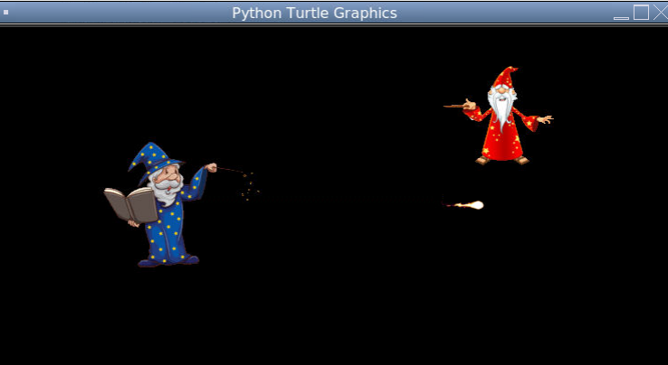
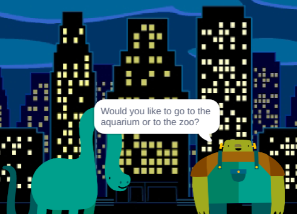
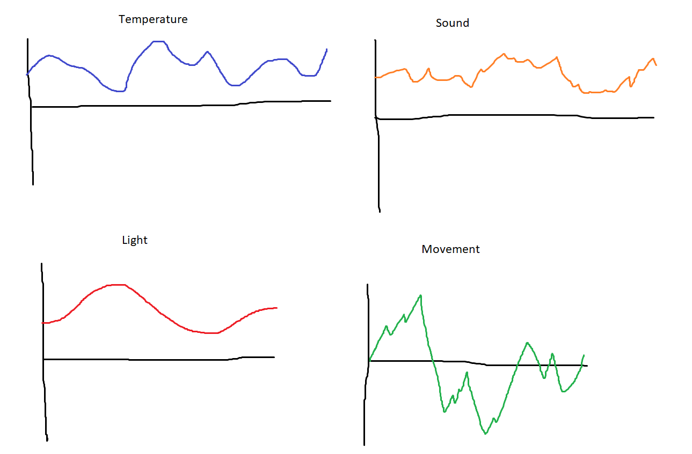
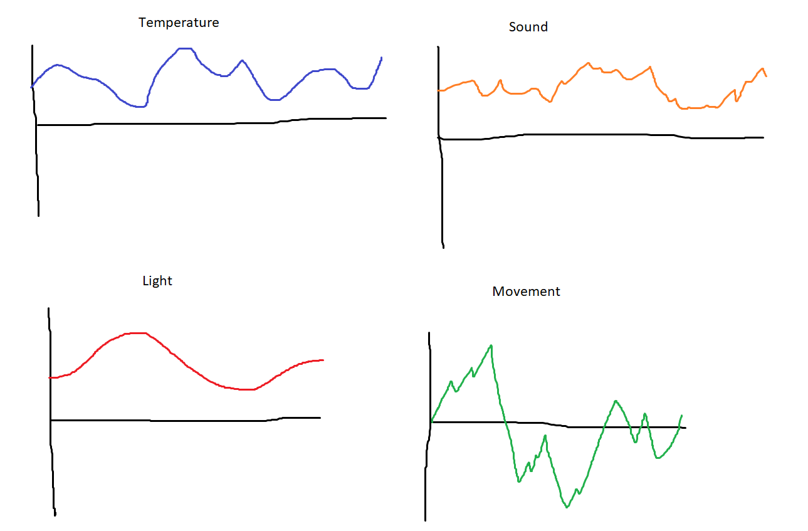
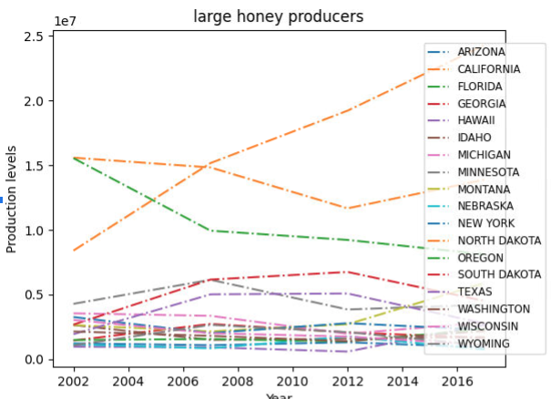
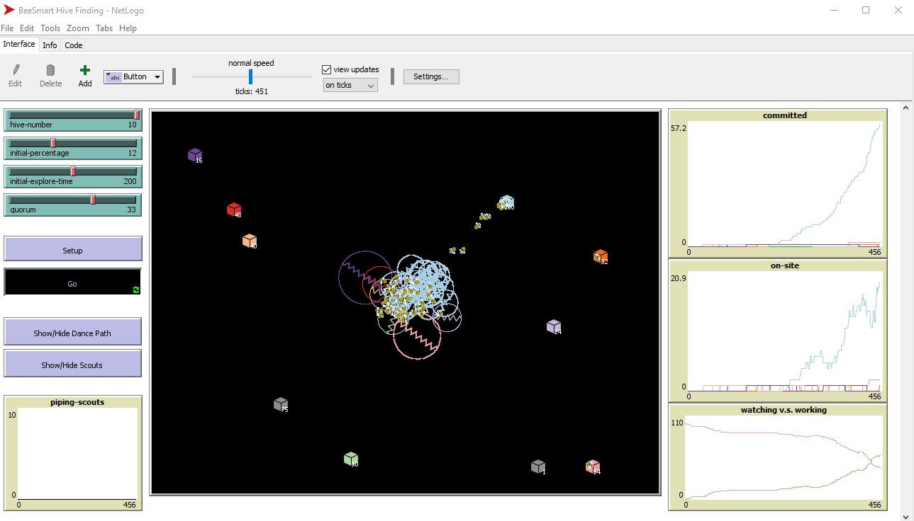

Home
Portfolio
About Me
This is my Portfolio Page!
Rock dodge game

In my game there is rocks falling from the sky and there will be a person below. The goal is to dodge the rocks, and for every rock dodged you earn a point, and if you get hit by a rock you lose and your score will reset.
Fireball Fighting Game

In this game the goal is to try to hit your opponent with a fireball while at the same time trying to avoid their fireball. It's a fun competitive game that you can play with your friends.
Dino in da City

This next project is an interactive story made in scratch. In the story you go around to different places in the city. There's a plot twist though, sometimes you can end up choosing an option that automatically leads to the game ending.
Dino in da City
 

My next project is the PLTW 3.1.6 Rover Phone Home Project. In this project we were give multiple lists of data, and we were supposed to find out what list of data was for. It was kind of like a puzzle, and in the end we were supposed to find out at what location our robot was at. We ended up deciding on the Indland Forests, because it seemed the most accurate to us, and it matched up with our data better than the other locations.
3.2.4 PLTW Project

My next project is the PLTW 3.2.4 Project. This graph represents the data that shows that honey production is stable and there are a few states that produce much more honey than others. We found this out by graphing data that we received.
Netlogo Final Project

My final project is a NetLogo simulation that we conducted about bees and the bees selecting the best hive available.